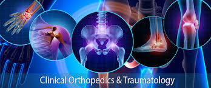

      


<!DOCTYPE html>
<html lang="en">
<head>
    <meta charset="UTF-8">
    <meta http-equiv="X-UA-Compatible" content="IE=edge">
    <meta name="viewport" content="width=device-width, initial-scale=1.0">
    <title>Orthopadic</title>
    <link href="C:\Users\129TX\Desktop\python\hms\css\orthopadic.css" rel="stylesheet" type="text/css">
</head>
<body>
    <style>
    html{
        
        background:url('back.jpg') no-repeat center center fixed;
        background-size: cover;
        -webkit-background-size:cover;
        -moz-background-size:cover;
        -o-background-size:cover;
    }
</style>
</body>
</html>
<section class="paras">
    <div class="orthopadicimage">
        

    </div>
    <div class="ortho">
        <h1>orthopadic </h1>
        <ul>
       <li> <p>Excellence in patient care, research and education is the overall goal of the department of orthopadic hospital.</p></li>
        <li><p>in addition to general orthopedics the department has a faculty which specializes in the field of joint replacement. sports medicine,hand surgery,musculskeletal oncology, pediatric orthopadics, spine surgery and treatment of complex trauma.the recent innovation in orthopadix surgery such as minimakky invasive joint replacement.surface replacement arthoplasty,revision hip and knee replacments,minimally invasive spine surgery,vascularised grafting for non unions,limb reimplantations,arthroscipic pcL and shoulder surgery are all bring practices with excellence results.</p></li>
        <li><p>the department of orthopadic surgery provides a comprehensive and integrated program for patient,students,residents and fellows.</p></li>
            <li><p>there is also a bone bank facility in the deptt where bith live donor bone and cadaveric bone are preserved and used as and when required.</p></li>
  </ul>
    </div>
    
</section>